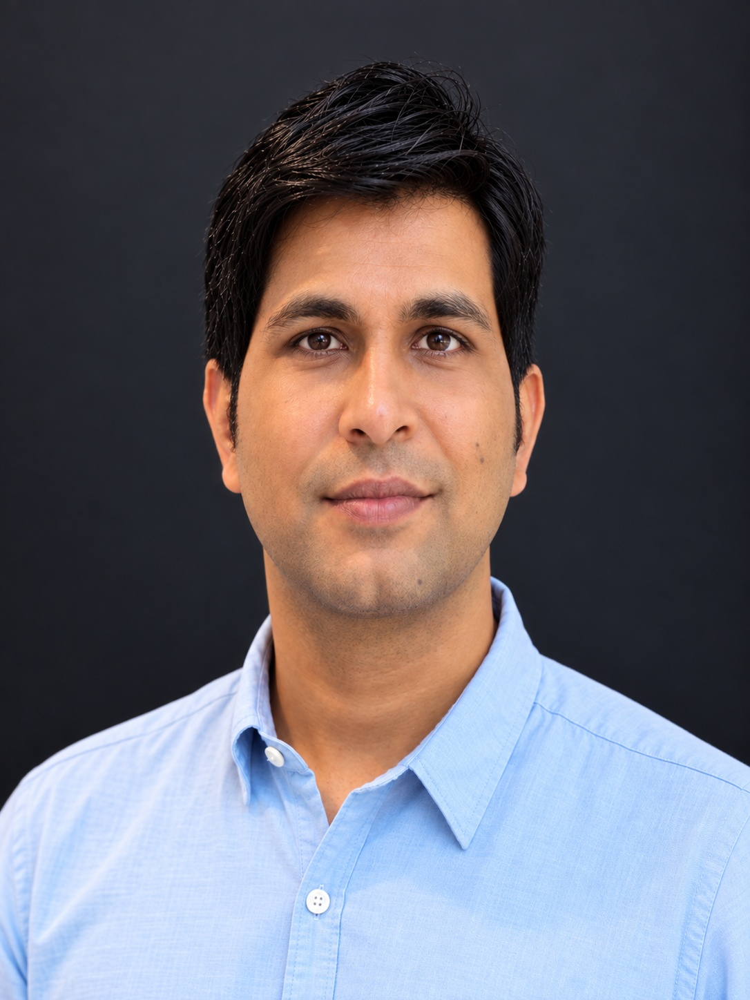
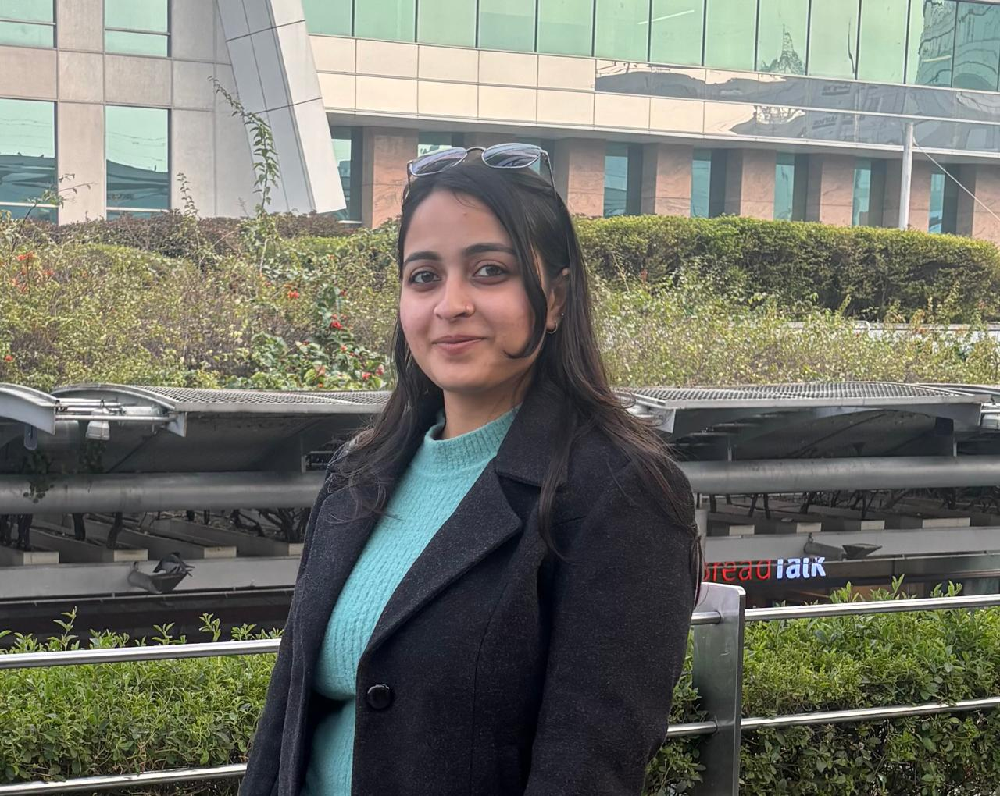
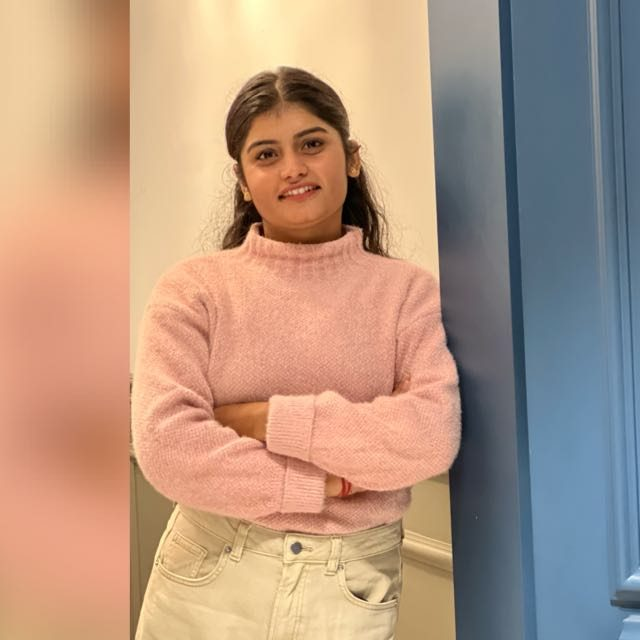
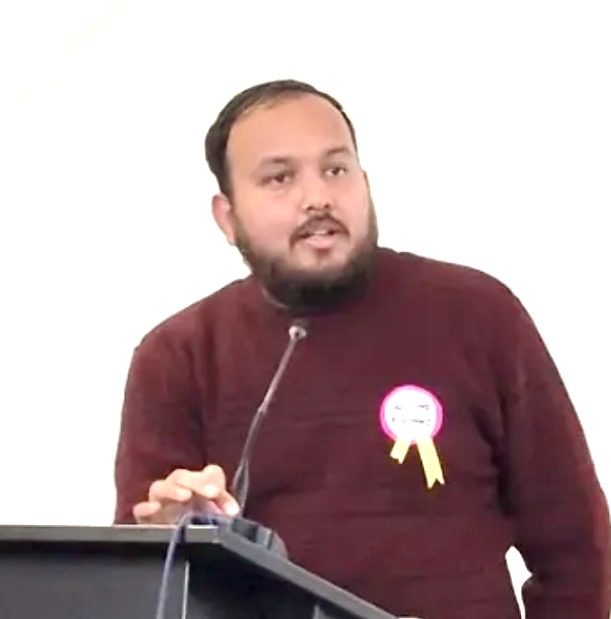
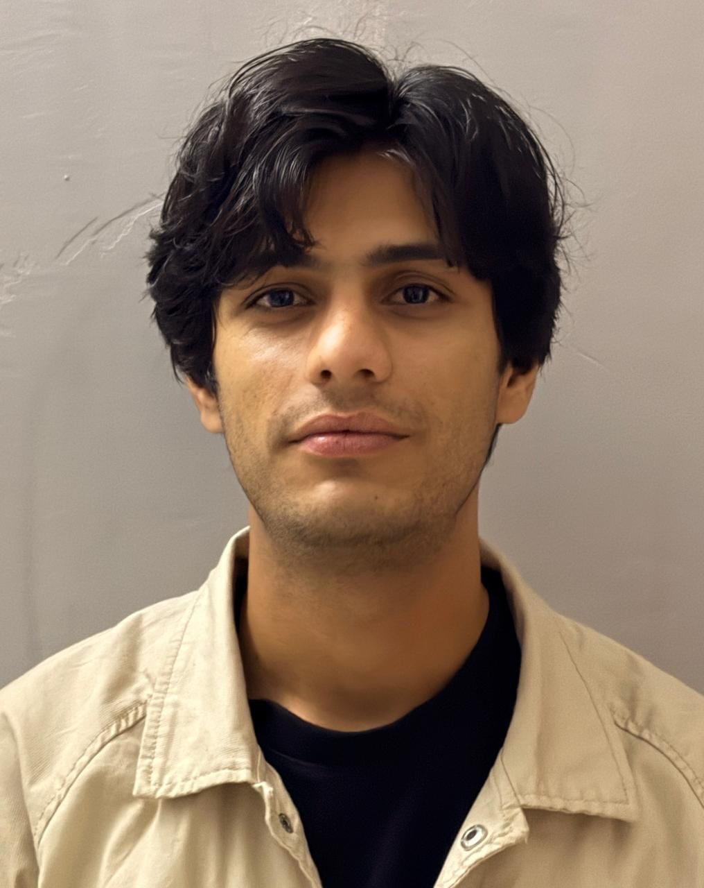

Research group in the Department of Physics & Astronomical Sciences, Central University of Jammu. Areas of work span thermoelectric materials, wide-bandgap semiconductor devices, ion-beam physics, and EUV/X-ray optical coatings. Three PhDs awarded; four candidates currently pursuing doctoral research.

Department of Physics & Astronomical Sciences, Central University of Jammu
Ph.D. — IIT Delhi (2013) | Lindau Nobel Laureate Meeting Alumni (2019)
"Research-active courses taught with direct reference to current experimental results — making the laboratory and the lecture hall a continuous learning environment. Three PhD students who completed degrees under supervision were initially introduced to research through taught courses."




The group also supervises M.Tech, M.Sc., and B.Tech project students.
Additionally supervised approximately 20 M.Tech, M.Sc., and B.Tech student projects across IUAC New Delhi, UPES Dehradun, and Central University of Jammu.
Foundational long-term collaboration underpinning the majority of the published research programme. SHI irradiation, in-situ electrical characterisation, thermoelectric engineering, defect kinetics.
GaN device fabrication, AlGaN/GaN HEMT characterisation, radiation effects in III-V devices. Direct relevance to ongoing DRDO CARS project.
THz applications of wide-bandgap semiconductors — GaN and SiC for terahertz generation, detection, and device applications. Emerging strategic direction.
PhD supervisor and long-term mentor. Collaboration on GaN Schottky barrier physics, device fabrication, and semiconductor characterisation spanning 2008–present.
Perovskite solar cells, ZnO thin films, semiconductor characterisation. Joint work on lead-free tin halide perovskite solar cells.
Luminescence, optical characterisation, and optoelectronic properties of doped oxide thin films. Co-supervision of students on TiO₂ and NiO-based functional materials.
TEM microstructural analysis of ion-irradiated GaN Schottky barrier devices — pioneering correlation of electrical damage with microstructural evolution under 200 MeV heavy ion bombardment. This collaboration directly underpins some of the most technically sophisticated published work.
Fabrication and characterisation of GaN Schottky diodes using UHV e-beam evaporation. International collaboration during PhD at IIT Delhi with one of the foremost III-V semiconductor research groups in Europe.
X-ray absorption spectroscopy (XAS) and electronic structure studies of thermoelectric thin films. Characterisation of SrTiO₃ and CoSb₃ systems using synchrotron X-ray facilities.
Luminescence, optical characterisation, and optoelectronic properties of doped oxide thin films. Co-supervision of student research on TiO₂ and NiO-based functional materials for optoelectronics.
Ion-beam induced degradation and electrical isolation of GaN. Joint experimental and theoretical modelling of SHI effects in III-V semiconductors.
We are always looking for motivated students and researchers to join our team. Positions are available for PhD students, M.Tech/M.Sc. project students, and postdoctoral researchers.
Open for candidates interested in semiconductor physics, thermoelectrics, or ion-beam science. JRF/SRF funding available through active projects.
M.Sc./M.Tech project students are regularly supervised. Contact well in advance of your project semester.
Exceptional candidates with NPDF, Raman Fellowship, or SERB funding are encouraged to discuss research alignment.